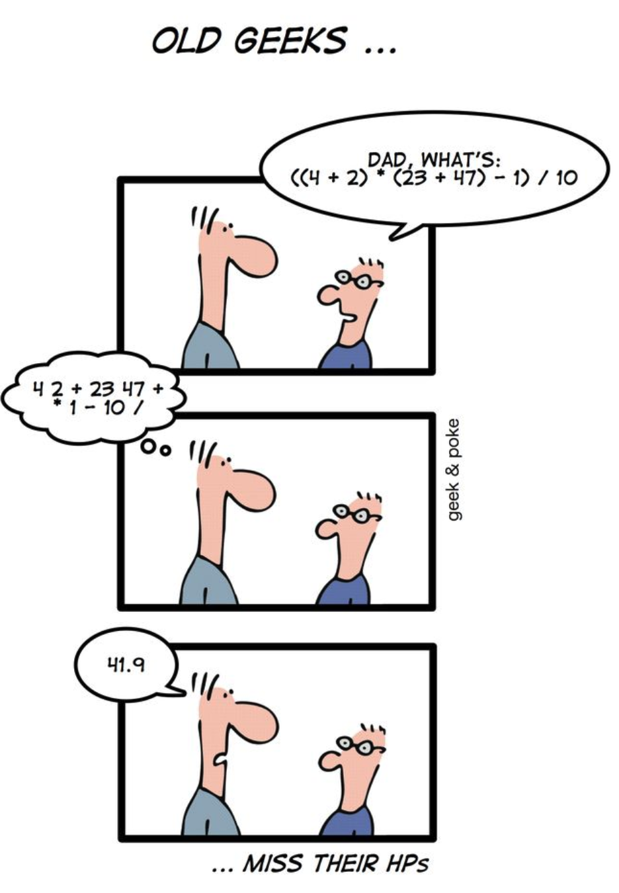

Back in elementary school, you learned that different arithmetic operators have different precedences. This is true in every country. For example, in English, there's a mnemonic to remember the order: "Please Excuse My Dear Aunt Sally" – representing the order: Parentheses, Exponents, Multiplication, Division, Addition, and Subtraction.For instance, the expression:
1 + 2 * 3 = ?
results in 7 because multiplication takes precedence over addition.
If we wanted to perform the addition first, we would need parentheses:
(1 + 2) * 3 = ?
However, in the early days of electronic calculators, parsing expressions with precedence and parentheses proved complicated.
To address this, the Polish mathematician Jan Łukasiewicz introduced a notation in the 1920s that made parentheses unnecessary, ensuring operations would be evaluated in the desired order. In his system, operators are written before their operands.
Later, in the 1950s, computer scientist Charles L. Hamblin proposed placing operators after the operands instead. This variant, which became very popular due to its ease of implementation using stacks, is known as Reverse Polish Notation (RPN), or postfix notation. In RPN, even complex expressions can be written without parentheses.
| Infix Notation | Reverse Polish Notation (RPN) |
|---|---|
| 1 + 1 | 1 1 + |
| 3 * (4 + 5) | 3 4 5 + * |
| 3 + 4 * 5 | 3 4 5 * + |
Your task is to write a program that evaluates expressions written in RPN. A standard evaluation algorithm works as follows:
The first line contains an integer N, the number of expressions to evaluate.
The following N lines each contain a single RPN expression, consisting of:
+, -, *, /You may assume that:
For each expression, print a single line:
Expressao Incorreta (Incorrect Expression, if the expression is malformed (e.g., stack underflow, leftover items, or division by zero).Input
6 1 1 + 3 4 5 + * 3 4 5 * + 1 + 1 1 1 + 2 3 8 2 / - 1 + *
Output
2 27 23 Expressao Incorreta Expressao Incorreta 0
Quando andaste na escola primária, aprendeste que os diferentes operadores aritméticos têm diferentes precedências. Isso acontece em todos os países, e por exemplo os ingleses usam a mnemónica: "Please Excuse My Dear Aunt Sally", que indica a ordem dos operadores (Parênteses, Exponenciação, Multiplicação, Divisão, Adição, Subtração).
Por exemplo, a expressão:
1 + 2 x 3 = ?dá como resultado
7, pois o operador multiplicação tem precedência.
Se quisermos avaliar primeiro a soma a expressão tem de ser:
(1 + 2) x 3 = ?No entanto, nos tempos iniciais das calculadoras electrónicas, revelou-se complicado analisar este tipo de expressões.
Por isso mesmo, em 1920, o matemático polaco Jan Lukasiewicz criou uma notação que tornava desnecessário o uso de parênteses, garantindo sempre que as operações eram efectuadas como desejado. A notação consistia basicamente em escrever os operadores antes dos números e não no meio deles.
Já em 1950, o computer scientist Charles L. Hamblin propôs um esquema onde os operadores
apareciam a seguir aos números, em vez de ser antes. Esta notação acabou por ser muito usada, devido entre
outras coisas à sua fácil implementação num sistema automático usando uma pilha, e ficou conhecida como
Notação Polaca Invertida (RPN) (ou postfix). Em RPN, uma expressão arbitrariamente
complexa pode ser escrita sem o uso de parênteses.
| Notação Normal | Notação Polaca Invertida (RPN) |
|---|---|
| 1 + 1 | 1 1 + |
| 3 * (4 + 5) | 3 4 5 + * |
| 3 + 4 * 5 | 3 4 5 * + |
A tua tarefa é criar um programa capaz de calcular o valor final de expressões dadas em RPN, sabendo que um algoritmo para as analisar é:
A primeira linha contém um número N, indicando o número de expressões a analisar.
As seguintes N linhas contêm expressões RPN, contendo
Podes assumir que os números são sempre inteiros, que os cálculos intermédios vão dar sempre números inteiros, e que só aparecem os quatro tipos básicos de operações atrás citados. O comprimento de uma expressão não excede os 10,000 caracteres.
Uma linha para cada expressão, indicando o resultado final caso a expressão seja correcta,
ou Expressao Incorreta, caso contrário.
Input
6 1 1 + 3 4 5 + * 3 4 5 * + 1 + 1 1 1 + 2 3 8 2 / - 1 + *
Output
2 27 23 Expressao Incorreta Expressao Incorreta 0